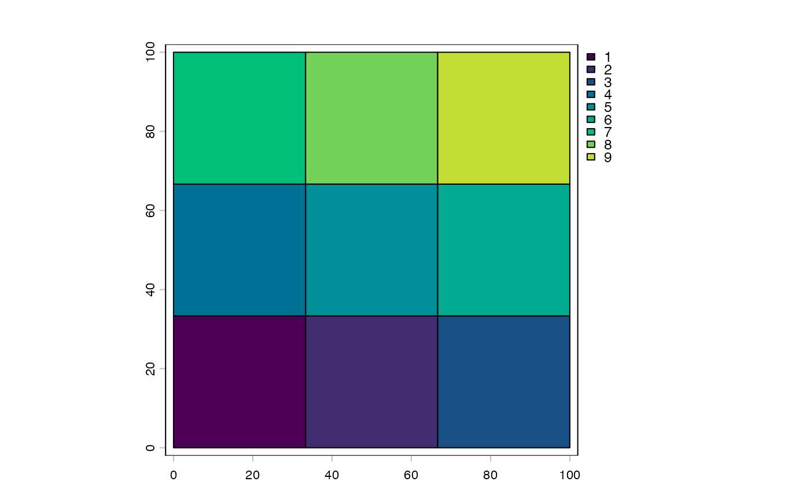
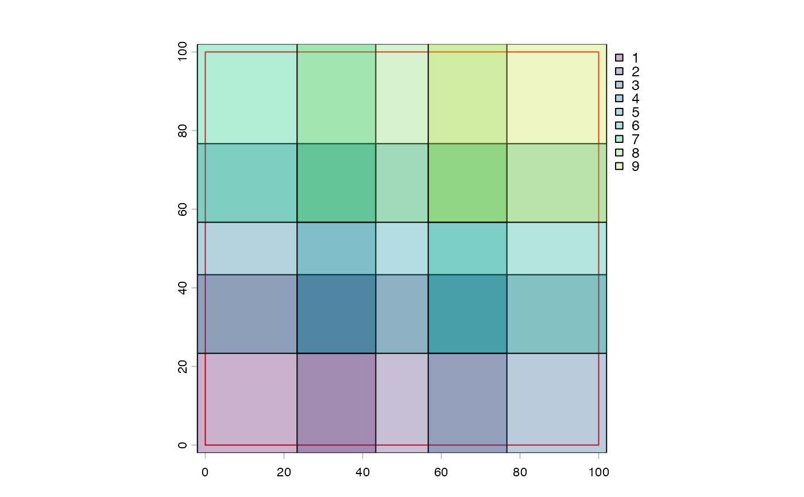
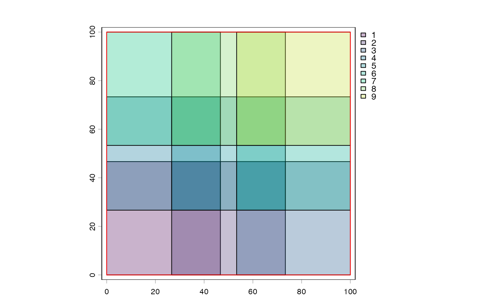
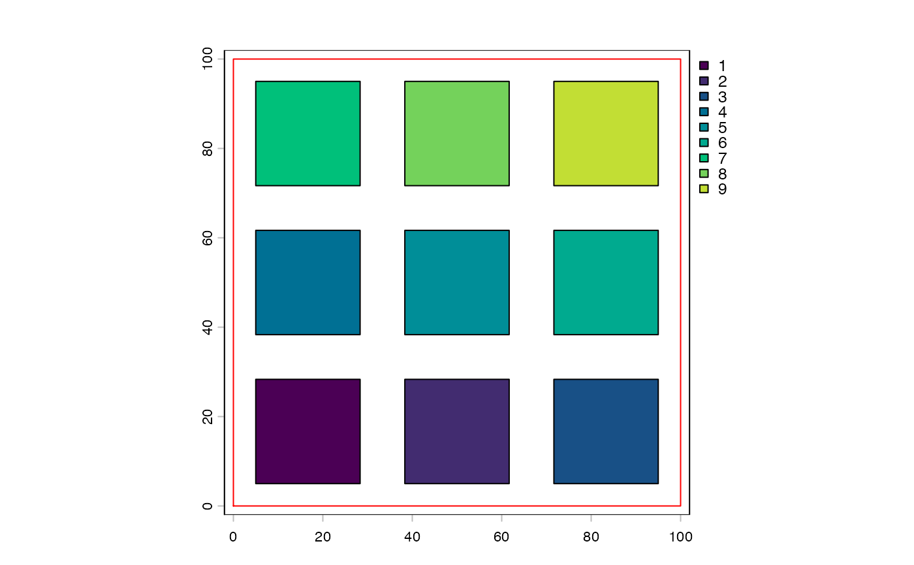

Utility class that simplifies the setup of tiles across a spatial extent.
Tiles are stored in a lightweight format safe to be passed to child
processes. Tile SpatExtent objects can be extracted on-demand.
extentnumeric. Spatial extent to tile across.
nnumeric. Number of tiles to create.
dimsnumeric. Number of rows/cols in the array of tiles
tile_dimsnumeric. Row/col dimensions of each tile
padnumeric. Tile padding
metadatadata.frame. Metadata per tile
A spatialTilePlan needs both a spatial extent to tile across and also a
request for a certain number of tiles.
spatialTilePlan() is used to create a spatialTilePlan instance.
ext()<- can be used to set up the spatial extent.
ext() is used to check extent.
length()<- is used to request a number of tiles.
length() can be used to find out how many tiles there are.
dim()/nrow()/ncol() basic generics are implemented and return
information about how the tiles are arranged.
Note that the number of requested tiles may not be the actual length, since a grid pattern must be followed. However, the number of generated tiles will be AT LEAST the number that is requested. Generated tiles will have as square a shape as possible.
[i] and [i, j] indexing can be used to select tiles, similarly to a
matrix. [] without any indexing will return the entire set of extents
as a list. Extracted extents will have metadata attached via attr().
See metadata section below.
+/- can be used to add or subtract padding to each of the tiles. Note
that this value does not affect the setting or retrieval of extent info via
ext() and ext()<-. Each bound will be expanded by the padding value.
To avoid having to use terra::extend() when padded tiles exceed raster
extent, you can decrease the extent by the same size as the padding.
plot() can be used to check the layout of the tiles.
The spatialTilePlan object can contain metadata. By default after extent and
tiles setup, a column called "tile" will be set up that simply records
which tile it is.
$ can be used to view a specific type of metadata and the padding value
$<- can be used to set additional metadata items and the padding value
[[i]] selection will pull specific metadata rows corresponding to the
selected tiles.
x <- tilePlan()
force(x)
#> Object of class spatialTilePlan
#> <empty>
ext(x) <- c(0, 100, 0, 100)
length(x) <- 8 # generated tiles will be AT LEAST this value
force(x)
#> Object of class spatialTilePlan
#> extent : 0, 100, 0, 100 (xmin, xmax, ymin, ymax)
#> dim : 3 3
#> pad : 0
length(x) # how many were actually generated?
#> [1] 9
dim(x)
#> [1] 3 3
nrow(x)
#> [1] 3
ncol(x)
#> [1] 3
# previewing
plot(x)

# tile padding
y <- x + 10
plot(ext(x), border = "red")
plot(y, alpha = 0.3, add = TRUE)

# this is now larger than the original space
ext(y) <- ext(y) - 10
plot(y, alpha = 0.3)
plot(ext(x), add = TRUE, border = "red")

# now this does not exceed the image
# negative padding
z <- x - 5
plot(ext(x), border = "red")
plot(z, add = TRUE)

# tile selection
x[5]
#> [[1]]
#> SpatExtent : 33.3333333333333, 66.6666666666667, 33.3333333333333, 66.6666666666667 (xmin, xmax, ymin, ymax)
#>
x[1, 2:3]
#> [[1]]
#> SpatExtent : 33.3333333333333, 66.6666666666667, 0, 33.3333333333333 (xmin, xmax, ymin, ymax)
#>
#> [[2]]
#> SpatExtent : 66.6666666666667, 100, 0, 33.3333333333333 (xmin, xmax, ymin, ymax)
#>
# metadata
x$tile
#> [1] 1 2 3 4 5 6 7 8 9
x$fname <- sprintf("tile_%03d.tif", x$tile)
x[[5]]
#> tile fname
#> 5 5 tile_005.tif
x[[1:3]]$fname
#> [1] "tile_001.tif" "tile_002.tif" "tile_003.tif"
# selected tiles carry metadata as attributes
attr(x[4][[1]], "tile")
#> [1] 4
attr(x[4][[1]], "fname")
#> [1] "tile_004.tif"